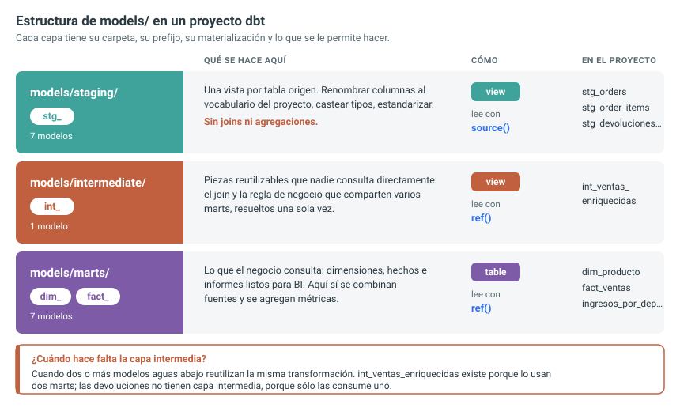
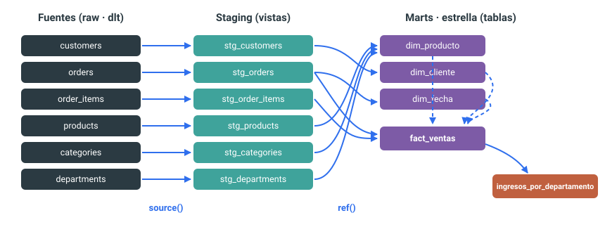
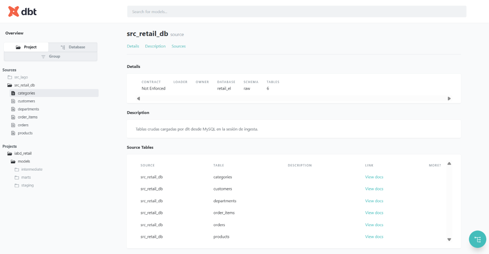
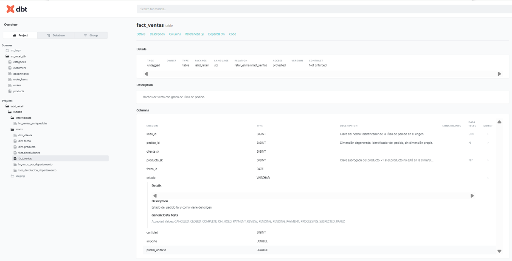
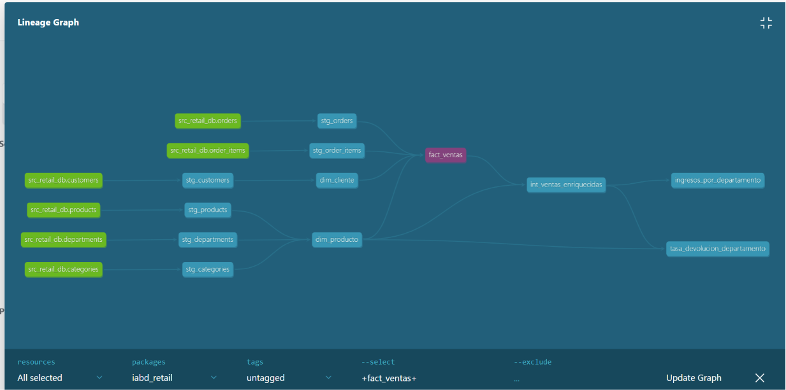

Changelog:
- Nueva creación — Noviembre 2026
Transformación con dbt¶
En sesiones anteriores hemos hecho varias cosas por separado. En la sesión de ingesta de datos con dlt resolvimos la E y la L: extrajimos retail_db de MySQL y lo cargamos tal cual en DuckDB, dentro del esquema raw. Y en la sesión de modelado dimensional diseñamos y construimos a mano el esquema en estrella sobre esos datos: la tabla de hechos fact_ventas, las dimensiones dim_producto, dim_cliente y dim_fecha, con sus claves subrogadas y su miembro desconocido.
Aquella estrella la montamos con scripts sueltos de CREATE TABLE AS: funcionaban, pero eran un conjunto de sentencias que había que ejecutar en el orden correcto, a mano, sin versionar y sin forma de saber qué depende de qué.
En esta sesión damos el salto que anunciamos entonces: nos vamos a centrar en la T e industrializar esas mismas transformaciones con dbt. La lógica SQL es prácticamente la misma; lo que cambia es que pasa a ser un proyecto de ingeniería —versionado, con dependencias explícitas, materialización configurable y documentación— en lugar de un puñado de consultas.
Dónde encaja dbt
dbt no extrae ni carga datos: se apoya en el motor que ya los tiene (en nuestro caso DuckDB) y le manda SELECT. Es la pieza de transformación de un stack ELT moderno. La lógica sigue siendo SQL; lo que aporta dbt es ingeniería de software alrededor de ese SQL: dependencias, entornos, control de versiones, documentación y pruebas.
Analytics engineering¶
Durante años hubo dos perfiles muy separados. El ingeniero de datos (data engineer) montaba infaestructura y movía datos, pero no conocía el negocio. El analista de datos (data analyst) conocía el negocio y escribía SQL —justo lo que hicimos en la sesión de modelado— pero trabajaba con consultas sueltas, sin control de versiones, que nadie más podía reutilizar ni verificar.
El ingeniero analítico (analytics engineer) es el puente: aplica prácticas de desarrollo de software (control de versiones, modularidad, pruebas, revisión de código, integraciones continuas, documentación) al trabajo analítico en SQL. En lugar de los scripts de CREATE TABLE que ejecutábamos a mano, produce un repositorio de modelos versionado, documentado y reproducible.
Linaje de los datos
El linaje de los datos es la información de qué modelo depende de qué otro modelo o fuente. dbt lo construye automáticamente y lo dibuja en un grafo navegable.
De dicha necesidad surgió dbt, la herramienta que popularizó ese rol. Un modelo dbt es, simplemente, un SELECT guardado en un fichero .sql. dbt se encarga de convertir ese SELECT en una vista o una tabla dentro del almacén, de resolver en qué orden ejecutar los modelos y de mantener el linaje entre ellos. No hay que aprender un lenguaje nuevo: el 95 % es SQL, el mismo que ya hemos utilizado hasta ahora.
dbt Core y dbt Cloud¶
Existen dos formas de usar dbt:
- dbt Core es la herramienta de línea de comandos, de código abierto (licencia Apache 2.0). Es lo que usaremos: gratis, se ejecuta en local o en cualquier orquestador como Airflow o Prefect, y no depende de ningún servicio.
- dbt Cloud es el producto SaaS comercial de dbt Labs: añade IDE web, planificador, control de accesos y observabilidad sobre dbt Core.
Todo lo que veremos funciona con dbt Core. Para conectarnos con DuckDB usaremos el adaptador dbt-duckdb, que es un plugin instalable aparte.
¿Y dbt Fusion?
Desde 2025 dbt Labs desarrolla Fusion, un motor nuevo escrito en Rust que sustituye al motor histórico en Python. No es un dbt distinto: usa el mismo lenguaje de proyecto (modelos, ref(), YAML), pero al comprender el SQL de forma nativa aporta compilación local, detección de errores en el editor y linaje a nivel de columna, además de ser mucho más rápido en proyectos grandes.
Instalación¶
Si quieres instalar dbt Core y el adaptador dbt-duckdb en tu máquina, la forma más sencilla es con pip:
pip install dbt-duckdb
dbt --version
Al instalar dbt-duckdb se arrastran como dependencias tanto dbt-core como duckdb, así que no hay que instalarlos por separado.
En nuestro caso, como ya está instalado en el contenedor iabd-de-lab (recuerda que te puedes conectar mediante docker exec -it iabd-de-lab bash), podemos comprobar directamente la instalación mediante:
dbt --version
# Core:
# - installed: 1.12.3
# - latest: 1.12.3 - Up to date!
# Plugins:
# - duckdb: 1.11.0 - Up to date!
Un comando, muchos subcomandos
dbt funciona con subcomandos, al estilo de git: dbt run, dbt debug, dbt docs, dbt ls... Los iremos viendo a lo largo de la sesión.
Estructura de un proyecto¶
El primer paso es crear un proyecto dbt, que es un repositorio de modelos versionado y documentado. Para ello, ejecutaremos el comando dbt init:
cd /workspace/dbt
dbt init iabd_retail
El comando pregunta el adaptador y genera un esqueleto de carpetas:
iabd/
├── profiles.yml # cómo conectar con el almacén
iabd_retail/
├── dbt_project.yml # configuración del proyecto
Como puedes observar, tenemos dos carpetas por separado, una para el proyecto dbt (iabd_retail) y otra para el fichero profiles.yml que contiene la conexión con DuckDB, y que dbt mantiene a propósito fuera del proyecto, porque ahí van las credenciales y no deben acabar versionadas en git.
Así pues, la carpeta iabd almacena la conexión. En una instalación por defecto, normalmente, la ruta sería ~/.dbt/profiles.yml, pero en nuestro caso la hemos configurado previamente mediante la variable de entorno DBT_PROFILES_DIR del docker-compose.yml.
Las tres zonas¶
La estructura recomendada de un proyecto dbt no es una convención arbitraria: es la misma división en zonas que ya conocemos, expresada en carpetas.
models/
├── staging/ ← una vista por cada tabla del origen, sin lógica de negocio
├── intermediate/ ← limpieza, combinaciones y cálculos reutilizables
└── marts/ ← hechos, dimensiones y tablas de negocio
La correspondencia entre los tres vocabularios que hemos ido usando:
| Zona | Bucket en MinIO | Carpeta en dbt | Qué contiene | Materialización habitual |
|---|---|---|---|---|
| Aterrizaje | raw-data |
staging |
los datos del origen, renombrados y tipados, sin más | vista |
| Procesado | processed |
intermediate |
lógica intermedia reutilizable entre varios marts | vista o tabla |
| Presentación | warehouse |
marts |
fact_ventas, dim_producto, dim_cliente, dim_fecha y los marts de negocio, listos para su consumo. Normalmente se colocan las tablas listas para los cuadros de mandos |
tabla |
La razón de que staging se materialice como vista y los marts como tabla encaja con el propósito de cada zona. Una vista de staging no ocupa espacio y siempre refleja el estado actual del origen; un mart se consulta muchas veces al día y compensa pagar el coste de materializarlo una vez.
Una regla de oro del staging
En staging no se hace lógica de negocio: solo renombrar columnas, ajustar tipos y poco más. Un modelo de staging debe poder leerse al lado de la tabla de origen y reconocerse sin esfuerzo. Toda decisión de negocio vive aguas abajo, en intermediate o en marts, donde se puede documentar y probar.
Dos salas o tres zonas
La división original de Kimball es de dos: la trastienda, donde ocurre todo el proceso de ETL, y la sala, el área de presentación que consume el negocio. Partir la trastienda en aterrizaje y procesado es la lectura moderna de esa misma propuesta, nacida de que el almacenamiento barato permite conservar indefinidamente una copia intacta del origen, algo impensable cuando Kimball escribió su libro.
Conviene además no tomarse la frontera de forma dogmática. Kimball insistía en que el comensal no entra en la cocina, y con razón para los informes corporativos; pero en la práctica actual es normal que un analista consulte directamente una tabla de staging para investigar una anomalía. La regla sigue viva para lo que se publica; para explorar, la puerta está más abierta de lo que estaba en los noventa.
Configuración: dbt_project.yml¶
El fichero dbt_project.yml es el corazón del proyecto. Ahí se declara el nombre del proyecto, qué profile utiliza y la configuración por defecto de cada carpeta de modelos. En nuestro caso, queremos que todo lo que yazca bajo staging/ se materialice como vista y lo que esté bajo marts/ como tabla:
name: 'iabd_retail'
version: '1.0.0'
profile: 'iabd_retail'
model-paths: ["models"]
# analysis-paths: ["analyses"] test-paths: ["tests"] ... rutas para otros tipos de artefactos que no usaremos en esta sesión
models:
iabd_retail:
staging:
+materialized: view # todo lo de staging/ será una vista
marts:
+materialized: table # todo lo de marts/ será una tabla
La carpeta manda, pero un modelo puede llevar la contraria
Lo que declaramos en dbt_project.yml es el valor por defecto de cada carpeta. Si un modelo concreto necesita otra cosa, se le añade un bloque config() al principio de su .sql y esa declaración gana sobre la de la carpeta:
{{ config(materialized='table') }}
select ...
Viene bien para la excepción puntual, como un modelo de staging tan costoso que compensa materializarlo. Pero conviene no abusar: si acabas poniendo config() en media carpeta, lo que está mal es el valor por defecto.
Así pues, el resultado al que llegaremos una vez hayamos creado el modelo dimensional en estrella será similar al siguiente:
---
config:
treeView-beta:
showIcons: false
---
treeView-beta
iabd_retail/
dbt_project.yml :::highlight ## configuración del proyecto
models/
staging/ :::highlight ## capa de limpieza (1 modelo por tabla origen)
_retail_sources.yml
stg_customers.sql
stg_orders.sql
stg_order_items.sql
stg_products.sql
stg_categories.sql
stg_departments.sql
marts/ :::highlight ## la estrella (tablas de negocio)
dim_producto.sql
dim_cliente.sql
dim_fecha.sql
fact_ventas.sql
ingresos_por_departamento.sql ## el mart que responde a la pregunta de negocioConviene tener claro el papel de cada carpeta:
- staging: almacena una vista por cada tabla origen. En esta capa se realiza una limpieza ligera: renombrar columnas, castear tipos, estandarizar. No se hacen joins ni agregaciones, ya que se trata de la "aduana" por donde entra todo dato crudo. Como convención, se utiliza el prefijo
stg_. - marts: almacena las tablas de negocio ya listas para consumo, es decir, aquí vivirá nuestra estrella, tanto las dimensiones (
dim_), el hecho (fact_ventas) y los informes que se apoyan en ellos.
Conexión: profiles.yml¶
dbt separa qué transformar (los modelos, versionados en el repo) de dónde hacerlo (la conexión, que cambia entre tu portátil y producción). Esa conexión vive en profiles.yml.
En un entorno real este fichero va en ~/.dbt/profiles.yml para no meter las credenciales en el repositorio; en clase lo dejamos junto al proyecto para tenerlo todo a la vista.
iabd_retail: # debe coincidir con 'profile:' de dbt_project.yml
target: dev
outputs:
dev:
type: duckdb
path: /workspace/dbt/iabd/retail_el.duckdb
schema: main
threads: 4
Para que nos funcione con duckdb, vamos a copiar el fichero retail.duckdb que generó dlt en la sesión de ingesta a la carpeta del proyecto dbt:
cp /workspace/retail_el.duckdb /workspace/dbt/iabd/retail_el.duckdb
Antes de ejecutar nada, conviene comprobar que la conexión funciona mediante dbt debug:
16:45:59 Running with dbt=1.12.3
16:45:59 dbt version: 1.12.3
16:45:59 python version: 3.12.14
16:45:59 python path: /usr/local/bin/python3.12
16:45:59 os info: Linux-5.15.153.1-microsoft-standard-WSL2-x86_64-with-glibc2.41
16:45:59 Using profiles dir at /workspace/dbt/iabd
16:45:59 Using profiles.yml file at /workspace/dbt/iabd/profiles.yml
16:45:59 Using dbt_project.yml file at /workspace/dbt/iabd_retail/dbt_project.yml
16:45:59 adapter type: duckdb
16:45:59 adapter version: 1.11.0
16:45:59 Configuration:
16:45:59 profiles.yml file [OK found and valid]
16:45:59 dbt_project.yml file [OK found and valid]
16:45:59 Required dependencies:
16:45:59 - git [OK found]
16:45:59 Connection:
16:45:59 database: retail_el
16:45:59 schema: main
16:45:59 path: retail_el.duckdb
...
16:45:59 Connection test: [OK connection ok]
Bloqueo de escritura en DuckDB
Recuerda que DuckDB admite un único proceso escritor sobre el mismo fichero. Si tienes abierta una consola de DuckDB apuntando a retail_el.duckdb, dbt run fallará con un error de bloqueo. Cierra cualquier otra conexión antes de ejecutar dbt.
Caso 1. Creando la estrella¶
Antes de empezar conviene saber a dónde vamos. En la sesión de modelado dimensional abrimos con una pregunta de negocio trivial —¿cuánto ingresamos por departamento?— y comprobamos que, sobre las tablas normalizadas tal y como vienen del origen, responderla exigía recorrer cuatro tablas encadenando tres combinaciones:
SELECT d.department_name AS departamento, round(sum(oi.order_item_subtotal), 2) AS ingresos
FROM order_items oi
JOIN products p ON p.product_id = oi.order_item_product_id
JOIN categories c ON c.category_id = p.product_category_id
JOIN departments d ON d.department_id = c.category_department_id
GROUP BY ALL
ORDER BY ingresos DESC;
El objetivo de este primer caso es llegar a responder esa misma pregunta con un SELECT de una sola combinación, mediante un mart que llamaremos ingresos_por_departamento. Para ello recorreremos el camino entero: declarar las fuentes, limpiarlas en staging, construir las dimensiones y el hecho, y rematar con ese mart.
Para ello, una vez tenemos la configuración inicial, vamos a configurar los elementos del proyecto con la siguiente estructura:

Fuentes de datos¶
Los datos crudos que cargó dlt viven en el esquema raw que reside en el fichero retail_el.duckdb. Antes de transformarlos, debemos informarlos a dbt declarándolos como sources en un fichero YAML, el cual colocaremos en la carpeta models/staging/ y, en nuestro caso, lo llamaremos _retail_sources.yml.
Esto no crea nada, solo le dice a dbt que dichas tablas ya existen y que serán la fuente de nuestros modelos:
version: 2
sources:
- name: src_retail_db
description: "Tablas crudas cargadas por dlt desde MySQL en la sesión de ingesta mediante dlt."
database: retail_el
schema: raw
tables:
- name: customers
- name: orders
- name: order_items
- name: products
- name: categories
- name: departments
Al configurar aquí la fuente, dbt puede generar documentación y pruebas de integridad sobre ella, y además nos permite referenciarla en los modelos sin escribir el nombre real de la tabla origen. De esta manera, en el SQL de los modelos nunca escribimos el nombre real de la tabla origen, sino que en su lugar usamos la función source():
select * from {{ source('src_retail_db', 'customers') }}
¿Te suena la sintaxis {{ ... }}? Sí, es Jinja, un motor de plantillas que dbt intercala en el SQL.
En tiempo de compilación, dbt sustituye source('src_retail_db', 'customers') por "retail_el"."raw"."customers". Esto nos ofrece una mayor flexibilidad y mantenimiento, ya que si mañana el origen cambia de esquema, sólo debemos modificar una línea en el YAML y no cada consulta.
El primer modelo¶
Un modelo de staging hace un trabajo modesto pero imprescindible: leer una tabla cruda, seleccionar las columnas útiles, renombrarlas a un vocabulario consistente y poco más. El resultado es una tabla con un formato y nombres de columnas consistentes, listos para ser utilizados en los modelos de análisis.
Para cada una de las tablas, definiremos una consulta SQL en un fichero .sql dentro de models/staging/, y utilizaremos el prefijo stg_ para identificarlos fácilmente. Por ejemplo, el modelo stg_orders.sql lee la tabla orders y renombra las columnas a un vocabulario consistente:
with fuente as (
select * from {{ source('src_retail_db', 'orders') }}
)
select
order_id as pedido_id,
cast(order_date as date) as fecha, -- dlt cargó la fecha como timestamp, aquí la convertimos a DATE
order_customer_id as cliente_id,
order_status as estado
from fuente
Aquí ya podemos ver el valor de la capa de staging, donde la columna order_date llegó como timestamp desde la ingesta, y la convertimos a DATE de una vez para todo el proyecto. En la sesión de modelado ese CAST lo repetíamos en cada consulta; ahora se hace una sola vez y todo lo que consuma stg_orders ya recibe la fecha con su tipo.
Para poder probar el modelo, podemos ejecutar:
dbt run --select stg_orders
# Running with dbt=1.12.3
# Registered adapter: duckdb=1.11.0
# Found 1 model, 6 sources, 500 macros
# Concurrency: 4 threads (target='dev')
#
# 1 of 1 START sql view model main.stg_orders ..................................... [RUN]
# 1 of 1 OK created sql view model main.stg_orders ................................ [OK in 0.09s]
#
# Finished running 1 view model in 0 hours 0 minutes and 0.18 seconds (0.18s).
# Completed successfully
# Done. PASS=1 WARN=0 ERROR=0 SKIP=0 NO-OP=0 REUSED=0 TOTAL=1
Y si queremos comprobar que el modelo se ha creado correctamente, podemos abrir una consola de DuckDB y ejecutar un SELECT sobre la vista stg_orders:
duckdb /workspace/dbt/iabd/retail_el.duckdb
y validar que se ha creado la vista stg_orders en el esquema main de DuckDB, con los nombres de las columnas y tipos de datos que hemos definido en el modelo:
select * from main.stg_orders limit 5;
-- ┌───────────┬────────────┬────────────┬────────────┐
-- │ pedido_id │ fecha │ cliente_id │ estado │
-- │ int64 │ date │ int64 │ varchar │
-- ├───────────┼────────────┼────────────┼────────────┤
-- │ 25885 │ 2014-01-01 │ 7253 │ PENDING │
-- │ 25894 │ 2014-01-01 │ 7839 │ PROCESSING │
-- │ 25915 │ 2014-01-01 │ 2963 │ COMPLETE │
-- │ 25942 │ 2014-01-01 │ 1117 │ PROCESSING │
-- │ 25954 │ 2014-01-01 │ 2582 │ PROCESSING │
-- └───────────┴────────────┴────────────┴────────────┘
El resto de los modelos de staging
Los cinco siguen el mismo patrón que stg_orders: leemos una fuente con source(), seleccionamos las columnas que nos son útiles y las renombramos al vocabulario del proyecto. Ni joins ni agregaciones, de manera que tenemos una tabla origen por modelo.
with fuente as (
select * from {{ source('src_retail_db', 'customers') }}
)
select
customer_id as cliente_id,
customer_fname as nombre,
customer_lname as apellido,
customer_email as email,
customer_city as ciudad,
customer_state as provincia
from fuente
with fuente as (
select * from {{ source('src_retail_db', 'order_items') }}
)
select
order_item_id as linea_id,
order_item_order_id as pedido_id,
order_item_product_id as producto_id,
order_item_quantity as cantidad,
order_item_subtotal as subtotal,
order_item_product_price as precio_unitario
from fuente
with fuente as (
select * from {{ source('src_retail_db', 'products') }}
)
select
product_id as producto_id,
product_category_id as categoria_id,
product_name as nombre,
product_price as precio
from fuente
with fuente as (
select * from {{ source('src_retail_db', 'categories') }}
)
select
category_id as categoria_id,
category_department_id as departamento_id,
category_name as nombre
from fuente
with fuente as (
select * from {{ source('src_retail_db', 'departments') }}
)
select
department_id as departamento_id,
department_name as nombre
from fuente
Creando una dimensión con ref()¶
Tras crear los modelos de staging, el siguiente paso es crear las dimensiones. Nos vamos a centrar en dim_producto, que es la más compleja de las tres. Si recordamos la sesión de modelado, la dimensión de producto tenía tres elementos clave:
- Clave subrogada con
row_number(). LEFT JOINhacia categoría y departamento.- Fila del miembro desconocido.
Para construirla con dbt, vamos a apoyarnos en los modelos de staging que acabamos de crear. Para ello, crearemos un CTE sobre cada modelo de staging, los cuales referenciaremos mediante ref() en lugar de source(). ¿Por qué? Porque dim_producto depende de otros modelos, no de una fuente. El mecanismo de referencia es el más importante de dbt.
Así pues, el modelo dim_producto.sql queda así:
with productos as (
select * from {{ ref('stg_products') }}
),
categorias as (
select * from {{ ref('stg_categories') }}
),
departamentos as (
select * from {{ ref('stg_departments') }}
),
base as (
select
row_number() over (order by p.producto_id) as producto_sk,
p.producto_id,
p.nombre as nombre,
coalesce(c.nombre, '(sin asignar)') as categoria,
coalesce(d.nombre, '(sin asignar)') as departamento,
p.precio as precio_catalogo
from productos p
left join categorias c on p.categoria_id = c.categoria_id
left join departamentos d on c.departamento_id = d.departamento_id
)
select * from base
union all
select -1, -1, '(desconocido)', '(desconocido)', '(desconocido)', 0 -- miembro desconocido
ref() construye el grafo por ti
Cada vez que un modelo referencia a otro con ref(), dbt anota esa dependencia. Con el conjunto de todas las dependencias construye un DAG (grafo dirigido acíclico) y deduce el orden de ejecución: primero staging, después las dimensiones, después el hecho que las referencia, y por último el informe. Nunca ordenamos nosotros las ejecuciones a mano; ese trabajo —el que en la sesión de modelado hacíamos vigilando el orden de los CREATE TABLE— es justo el que dbt nos quita.
Las otras dos dimensiones¶
Una vez creada la dimensión de producto, las otras dos dimensiones son muy parecidas:
-
En la dimensión de cliente,
dim_clientees idéntica en estructura adim_producto: clave subrogada conrow_number()y su fila para el miembro desconocido.models/marts/dim_cliente.sqlwith clientes as ( select * from {{ ref('stg_customers') }} ), base as ( select row_number() over (order by cliente_id) as cliente_sk, cliente_id, nombre || ' ' || apellido as nombre, ciudad, provincia from clientes ) select * from base union all select -1, -1, '(desconocido)', '(desconocido)', '(desconocido)' -- miembro desconocido -
En la dimensión de fecha,
dim_fechano sale de ninguna tabla origen, ya que se genera a partir del rango de fechas de los pedidos (conrange()de DuckDB) y deriva los atributos de calendario que luego facilitan agrupar por mes, trimestre o día de la semana.models/marts/dim_fecha.sqlwith limites as ( select min(fecha) as desde, max(fecha) as hasta from {{ ref('stg_orders') }} ), dias as ( select unnest(range( (select desde from limites), (select hasta from limites) + interval 1 day, interval 1 day ))::date as fecha_id ) select fecha_id, year(fecha_id) as anio, quarter(fecha_id) as trimestre, month(fecha_id) as mes, ['enero','febrero','marzo','abril','mayo','junio','julio', 'agosto','septiembre','octubre','noviembre','diciembre'][month(fecha_id)] as mes_nombre, isodow(fecha_id) as dia_semana, ['lunes','martes','miércoles','jueves','viernes','sábado', 'domingo'][isodow(fecha_id)] as dia_nombre, isodow(fecha_id) >= 6 as es_finde from dias
Si queremos ejecutar todos los modelos de staging y las tres dimensiones, podemos hacerlo con:
dbt run --select staging marts.dim_*
# Running with dbt=1.12.3
# Registered adapter: duckdb=1.11.0
# Found 11 models, 6 sources, 500 macros
# Concurrency: 4 threads (target='dev')
#
# 1 of 9 START sql view model main.stg_categories ................................ [RUN]
# 2 of 9 START sql view model main.stg_customers ................................. [RUN]
# 3 of 9 START sql view model main.stg_departments ............................... [RUN]
# 4 of 9 START sql view model main.stg_order_items ............................... [RUN]
# 3 of 9 OK created sql view model main.stg_departments .......................... [OK in 0.18s]
# 4 of 9 OK created sql view model main.stg_order_items .......................... [OK in 0.18s]
# 1 of 9 OK created sql view model main.stg_categories ........................... [OK in 0.19s]
# 2 of 9 OK created sql view model main.stg_customers ............................ [OK in 0.19s]
# 5 of 9 START sql view model main.stg_orders .................................... [RUN]
# 6 of 9 START sql view model main.stg_products .................................. [RUN]
# 7 of 9 START sql table model main.dim_cliente .................................. [RUN]
# 5 of 9 OK created sql view model main.stg_orders ............................... [OK in 0.16s]
# 6 of 9 OK created sql view model main.stg_products ............................. [OK in 0.16s]
# 8 of 9 START sql table model main.dim_fecha .................................... [RUN]
# 9 of 9 START sql table model main.dim_producto ................................. [RUN]
# 7 of 9 OK created sql table model main.dim_cliente ............................. [OK in 0.23s]
# 8 of 9 OK created sql table model main.dim_fecha ............................... [OK in 0.13s]
# 9 of 9 OK created sql table model main.dim_producto ............................ [OK in 0.13s]
#
# Finished running 3 table models, 6 view models in 0 hours 0 minutes and 0.67 seconds (0.67s).
# Completed successfully
# Done. PASS=9 WARN=0 ERROR=0 SKIP=0 NO-OP=0 REUSED=0 TOTAL=9
El hecho y el mart¶
El último paso es crear la tabla de hechos fact_ventas, que combina las tres dimensiones con los datos de ventas. Recuerda que en la sesión de modelado, fact_ventas era una tabla que combinaba las líneas de pedido con las dimensiones de producto, cliente y fecha (una fila por producto dentro de un pedido). En dbt, la creamos como un modelo más, y al igual que las dimensiones, referenciamos los modelos de staging y las dimensiones mediante ref().
Así pues, fact_ventas.sql queda de la siguiente manera:
with lineas as (
select * from {{ ref('stg_order_items') }}
),
pedidos as (
select * from {{ ref('stg_orders') }}
),
producto as (
select * from {{ ref('dim_producto') }}
),
cliente as (
select * from {{ ref('dim_cliente') }}
)
select
l.linea_id,
p.pedido_id as pedido_id, -- dimensión degenerada
coalesce(dc.cliente_sk, -1) as cliente_sk,
coalesce(dp.producto_sk, -1) as producto_sk,
p.fecha as fecha_id,
p.estado,
l.cantidad, -- aditiva
l.subtotal as importe, -- aditiva
l.precio_unitario -- NO aditiva
from lineas l
join pedidos p on l.pedido_id = p.pedido_id
left join producto dp on dp.producto_id = l.producto_id
left join cliente dc on dc.cliente_id = p.cliente_id
Para ejecutar todos los modelos de staging, las tres dimensiones y la tabla de hechos, podemos hacerlo con:
dbt run --select staging marts
Para ver el resultado, podemos abrir una consola de DuckDB (duckdb -readonly /workspace/dbt/iabd/retail_el.duckdb) y ejecutar un SELECT sobre la tabla fact_ventas:
select * from main.fact_ventas limit 5;
Compilación de modelos
Para ver qué genera realmente ref(), podemos mirar el SQL compilado (dbt lo deja en target/compiled/). Las llamadas Jinja han desaparecido y en su lugar hay nombres de tabla reales; observa cómo las dimensiones se resuelven a tablas del esquema main:
with lineas as (
select * from "retail_el"."main"."stg_order_items"
),
pedidos as (
select * from "retail_el"."main"."stg_orders"
),
producto as (
select * from "retail_el"."main"."dim_producto"
),
cliente as (
select * from "retail_el"."main"."dim_cliente"
)
select
...
Creando un mart¶
Y llegamos al último elemento, el que responde a la pregunta de negocio que abría la sesión de modelado: ¿cuánto ingresamos por departamento?. Para ello, creamos un modelo más, ingresos_por_departamento.sql, que combina la tabla de hechos con la dimensión de producto y agrupa por departamento, haciendo un SELECT con un solo join:
with ventas as (
select * from {{ ref('fact_ventas') }}
),
producto as (
select * from {{ ref('dim_producto') }}
)
select
dp.departamento,
count(distinct v.pedido_id) as pedidos,
sum(v.cantidad) as unidades,
round(sum(v.importe), 2) as ingresos
from ventas v
join producto dp on dp.producto_sk = v.producto_sk
where v.estado in ('COMPLETE', 'CLOSED')
group by dp.departamento
order by ingresos desc
Para probarlo, ejecutamos:
dbt run --select marts.ingresos_por_departamento
Y comprobamos el resultado con un SELECT sobre la tabla ingresos_por_departamento:
select * from main.ingresos_por_departamento;
-- ┌──────────────┬─────────┬──────────┬────────────┐
-- │ departamento │ pedidos │ unidades │ ingresos │
-- │ varchar │ int64 │ int128 │ double │
-- ├──────────────┼─────────┼──────────┼────────────┤
-- │ Fan Shop │ 17825 │ 46000 │ 7449910.44 │
-- │ Apparel │ 14442 │ 42020 │ 3213349.8 │
-- │ Golf │ 11393 │ 43493 │ 2018453.13 │
-- │ Footwear │ 5705 │ 19127 │ 1782298.11 │
-- │ Outdoors │ 3794 │ 11204 │ 432381.06 │
-- │ Fitness │ 903 │ 2539 │ 116589.94 │
-- └──────────────┴─────────┴──────────┴────────────┘
En resumen, el proyecto dbt ha transformado los datos crudos en una estrella de ventas lista para análisis, con las dimensiones y la tabla de hechos correctamente construidas y referenciadas. Para ello:
- las fuentes crudas (dlt) entran por
source() - los modelos se enlazan con
ref(). - y
fact_ventasresuelve sus claves subrogadas contra las dimensiones, también conref().
De forma visual, podemos representar la estructura de capas que hemos utilizado:

Ejecutando el proyecto¶
Hasta ahora, para probar cada uno de los pasos hemos ido ejecutando consultas mediante dbt run --select <modelo>. Pero cuando queremos ejecutar todo el proyecto, no es necesario indicar el orden ni las dependencias: dbt lo hace por nosotros.
Por ello, el comando estrella es dbt run, el cual compila todos los modelos, resuelve el orden a partir del DAG y los ejecuta contra DuckDB:
Running with dbt=1.12.3
Registered adapter: duckdb=1.11.0
Found 11 models, 6 sources, 500 macros
Concurrency: 4 threads (target='dev')
1 of 11 START sql view model main.stg_categories ............................... [RUN]
2 of 11 START sql view model main.stg_customers ................................ [RUN]
3 of 11 START sql view model main.stg_departments .............................. [RUN]
4 of 11 START sql view model main.stg_order_items .............................. [RUN]
2 of 11 OK created sql view model main.stg_customers ........................... [OK in 0.18s]
4 of 11 OK created sql view model main.stg_order_items ......................... [OK in 0.19s]
3 of 11 OK created sql view model main.stg_departments ......................... [OK in 0.19s]
1 of 11 OK created sql view model main.stg_categories .......................... [OK in 0.20s]
5 of 11 START sql view model main.stg_orders ................................... [RUN]
6 of 11 START sql view model main.stg_products ................................. [RUN]
7 of 11 START sql table model main.dim_cliente ................................. [RUN]
6 of 11 OK created sql view model main.stg_products ............................ [OK in 0.14s]
5 of 11 OK created sql view model main.stg_orders .............................. [OK in 0.14s]
8 of 11 START sql table model main.dim_producto ................................ [RUN]
9 of 11 START sql table model main.dim_fecha ................................... [RUN]
7 of 11 OK created sql table model main.dim_cliente ............................ [OK in 0.19s]
9 of 11 OK created sql table model main.dim_fecha .............................. [OK in 0.12s]
8 of 11 OK created sql table model main.dim_producto ........................... [OK in 0.13s]
10 of 11 START sql table model main.fact_ventas ................................ [RUN]
10 of 11 OK created sql table model main.fact_ventas ........................... [OK in 0.17s]
11 of 11 START sql table model main.ingresos_por_departamento .................. [RUN]
11 of 11 OK created sql table model main.ingresos_por_departamento ............. [OK in 0.08s]
Finished running 5 table models, 6 view models in 0 hours 0 minutes and 0.89 seconds (0.89s).
Completed successfully
Done. PASS=11 WARN=0 ERROR=0 SKIP=0 NO-OP=0 REUSED=0 TOTAL=11
Si nos fijamos en el orden que eligió dbt, vemos que primero se ejecutaron las 6 vistas de staging, después las 3 dimensiones, luego fact_ventas (que depende de ellas) y por último el informe. Y aquí está parte de la magia de dbt, ya que la herramienta deduce automáticamente el orden de ejecución basándose en las dependencias definidas con ref().
Y hay una segunda cosa que mirar en esa salida. dbt no habla de modelos a secas: dice sql view model para unos y sql table model para otros, y remata con "5 table models, 6 view models". Es la materialización en acción, la que configuramos por carpeta en el dbt_project.yml y cuyo criterio ya razonamos al hablar de las tres zonas.
Otras materializaciones
Además de vistas y tablas, dbt ofrece dos materializaciones más que no usaremos aquí: ephemeral, que no crea nada en el almacén porque inyecta el SQL del modelo como CTE dentro de quienes lo referencian, e incremental, que carga una tabla añadiendo solo las filas nuevas y que dejamos para la sesión de cierre
Por debajo, lo que hace dbt es envolver nuestro SELECT en una sentencia u otra: con view ejecuta un CREATE VIEW, de modo que no ocupa espacio pero el SELECT se recalcula en cada consulta; con table ejecuta un CREATE TABLE AS SELECT, que ocupa espacio y hay que reconstruir, pero se consulta rápido porque el cálculo ya está hecho. Esto último es exactamente lo que hacíamos a mano en la sesión de modelado, solo que ahora no lo decide cada sentencia, sino la carpeta donde vive el modelo.
Podemos comprobar dónde ha aterrizado cada cosa preguntándole al propio DuckDB:
select table_name, table_type
from information_schema.tables
where table_schema = 'main'
order by table_type, table_name;
┌──────────────────────────────┬────────────┐
│ table_name │ table_type │
│ varchar │ varchar │
├──────────────────────────────┼────────────┤
│ dim_cliente │ BASE TABLE │
│ dim_fecha │ BASE TABLE │
│ dim_producto │ BASE TABLE │
│ fact_ventas │ BASE TABLE │
│ ingresos_por_departamento │ BASE TABLE │
│ stg_categories │ VIEW │
│ stg_customers │ VIEW │
│ stg_departments │ VIEW │
│ stg_order_items │ VIEW │
│ stg_orders │ VIEW │
│ stg_products │ VIEW │
└──────────────────────────────┴────────────┘
Las seis vistas son los modelos de staging/ y las cinco tablas, los de marts/. No lo hemos decidido modelo a modelo: lo decidió la carpeta en la que vive cada uno.
Supongamos que hacemos un modificación en stg_products.sql y ejecutamos de nuevo dbt run; dbt detecta que stg_products ha cambiado y, por tanto, también debe reconstruir dim_producto, fact_ventas e ingresos_por_departamento, pero no toca los demás modelos que no dependen de él. Esto es lo que se conoce como reconstrucción incremental.
Como ya hemos visto, si no queremos ejecutar todo el proyecto, podemos ejecutar un subconjunto de modelos con --select. Por ejemplo, si solo nos interesan los modelos de staging y las dimensiones, podemos hacer:
dbt run --select staging marts.dim_*
Y retomando el ejemplo anterior, si modificamos stg_products.sql y queremos reconstruir solo los modelos que dependen de él, podemos usar el operador + para indicar que queremos incluir todas las dependencias a la derecha del modelo:
dbt run --select stg_products+
# 1 of 4 OK created sql view model main.stg_products ................ [OK in 0.10s]
# 2 of 4 OK created sql table model main.dim_producto ............. [OK in 0.10s]
# 3 of 4 OK created sql table model main.fact_ventas ............. [OK in 0.06s]
# 4 of 4 OK created sql table model main.ingresos_por_departamento [OK in 0.09s]
# Done. PASS=4 ... TOTAL=4
Finalmente, si queremos listarlos modelos sin ejecutarlos, podemos emplear el comando dbt ls:
iabd_retail.marts.dim_cliente
iabd_retail.marts.dim_fecha
iabd_retail.marts.dim_producto
iabd_retail.marts.fact_ventas
iabd_retail.marts.ingresos_por_departamento
iabd_retail.staging.stg_categories
...
Caso 2. Incorporando otra fuente¶
Hasta ahora las seis tablas del proyecto venían del mismo sitio, ya que la ingesta se realizaba a través del mismo proceso dlt run de la sesión de ingesta. Por eso source() ha parecido hasta cierto punto burocrático; declaramos seis tablas del mismo origen para leerlas del mismo origen.
Para comprobar el valor real de source(), necesitamos un escenario en el que los datos lleguen por caminos distintos.
Por suerte, o no, nos acaban de comunicar que el equipo de logística deja cada noche en el lago un fichero Parquet con las devoluciones del día. Este archivo nosotros nosotros no lo producimos, únicamente lo consumimos.
Preparando el fichero de devoluciones
Como realmente no tenemos equipo de logística, vamos a fabricar el archivo mediante los pedidos que ya tenemos cargados.
Conviene destacar que este paso no forma parte del trabajo con dbt, ya que en un escenario real, algún sistema externo dejaría el fichero en el lago.
Para ello, hemos creado el script gen_devoluciones.sql, el cual marca como devuelta una de cada ocho líneas de los pedidos entregados. Para ello, usa hash() en vez de random(), para que se trate de un operación determinista, de manera que siempre obtengamos las mismas devoluciones.
COPY (
with entregadas as (
-- Sólo se puede devolver lo que se entregó
select
oi.order_item_id,
oi.order_item_order_id,
oi.order_item_product_id,
oi.order_item_quantity,
oi.order_item_subtotal,
o.order_date
from raw.order_items oi
join raw.orders o on o.order_id = oi.order_item_order_id
where o.order_status in ('COMPLETE', 'CLOSED')
),
marcadas as (
-- ~12% de las líneas entregadas se devuelven
select *, hash(order_item_id) as h
from entregadas
where hash(order_item_id) % 100 < 12
)
select
row_number() over (order by order_item_id) as devolucion_id,
order_item_id as linea_id,
order_item_order_id as pedido_id,
order_item_product_id as producto_id,
(order_date + to_days((h % 28 + 3)::int))::date as fecha_devolucion,
least(order_item_quantity, (h % 3 + 1)::int) as unidades_devueltas,
round(order_item_subtotal / order_item_quantity * least(order_item_quantity, (h % 3 + 1)::int), 2) as importe_devuelto,
['talla incorrecta','defectuoso','no era lo esperado', 'llegó tarde','cambio de opinión'][(h % 5 + 1)::int] as motivo,
['tienda','mensajería','punto de recogida'][(h % 3 + 1)::int] as canal
from marcadas
order by devolucion_id
) TO '/workspace/lago/devoluciones.parquet' (FORMAT PARQUET);
Antes de lanzarlo, debemos crear la carpeta para simular el lago y cargar el script en DuckDB:
docker exec -it iabd-de-lab bash
mkdir -p /workspace/lago
duckdb -readonly /workspace/dbt/iabd/retail_el.duckdb < /workspace/gen_devoluciones.sql
Para comprobar el resultado, podemos comprobar que existe y el tamaño que tiene, así como ejecutar una consulta sobre el archivo:
du /workspace/lago/devoluciones.parquet
# 144 /workspace/lago/devoluciones.parquet
duckdb -c "select count(*) as devoluciones,
round(sum(importe_devuelto), 2) as importe
from read_parquet('/workspace/lago/devoluciones.parquet')"
# ┌──────────────┬────────────┐
# │ devoluciones │ importe │
# │ int64 │ double │
# ├──────────────┼────────────┤
# │ 8925 │ 1406263.64 │
# └──────────────┴────────────┘
Un fichero como fuente¶
Una vez tenemos el fichero de devoluciones en el lago, podemos incorporarlo al proyecto dbt. ¿Qué haremos? ¿Lo cargamos en DuckDB y lo declaramos como una fuente más? No, porque el fichero es muy grande y no queremos duplicar los datos. En su lugar, vamos a declarar la fuente directamente sobre el fichero, declarada en el mismo _retail_sources.yml que las anteriores:
sources:
...
- name: src_lago
description: "Ficheros parquet depositados en el lago por el equipo de logística."
schema: lago
tables:
- name: devoluciones
description: "Una fila por línea devuelta."
meta:
external_location: "read_parquet('/workspace/lago/devoluciones.parquet')"
Para ello, empleamos la propiedad external_location, propia del adaptador dbt-duckdb, y que indica que, cuando alguien pida esta fuente, en lugar de buscar una tabla ejecute esa expresión. El schema: lago es sólo un nombre lógico para agrupar la fuente; no existe como esquema dentro de la base de datos.
El siguiente paso, es crear el modelo en staging, el cual no difiera nada de los anteriores, únicamente ahora accedemos a la fuente src_lago en lugar de src_retail_db:
with fuente as (
select * from {{ source('src_lago', 'devoluciones') }}
)
select
devolucion_id,
linea_id,
pedido_id,
producto_id,
cast(fecha_devolucion as date) as fecha,
unidades_devueltas as unidades,
importe_devuelto as importe,
motivo,
canal
from fuente
Tras ejecutar en dbt este modelo:
dbt run --select stg_devoluciones
# ...
# 1 of 1 START sql view model main.stg_devoluciones .............................. [RUN]
# 1 of 1 OK created sql view model main.stg_devoluciones ......................... [OK in 0.09s]
# ...
Si ahora miramos el SQL compilado en target/compiled/, vemos qué ha hecho realmente dbt con esa fuente:
with fuente as (
select * from read_parquet('/workspace/lago/devoluciones.parquet')
)
select
...
Esto nos confirma que no ha cargado el fichero en ninguna parte, de forma que DuckDB lo lee al vuelo cada vez que se consulta el modelo.
Así pues, toda fuente no tiene por qué ser una tabla del almacén, puede ser un fichero, un conjunto de ficheros con comodín, o un objeto en el lago.
Un cambio de ubicación es una línea
Cuando el fichero pase a vivir en MinIO, el único cambio será el external_location: read_parquet('s3://raw-data/devoluciones.parquet'). Los modelos que lo consumen no se enteran, porque sólo conocen el nombre de la fuente. Esa indirección es justo lo que aporta source().
El segundo hecho¶
Las devoluciones miden un proceso de negocio distinto al de las ventas, con su propio grano (una fila por línea devuelta), así que les corresponde su propia tabla de hechos, y no una columna más dentro de fact_ventas.
Para ello, crearemos un nuevo hecho que llamaremos fact_devoluciones, donde realizaremos un join entre stg_devoluciones y la dimensiones de producto. En este caso, la dimensión de cliente no es necesaria, ya que las devoluciones se generan a partir de líneas de pedido existentes, lo que implica que el cliente ya está implícito en la línea devuelta.
with devoluciones as (
select * from {{ ref('stg_devoluciones') }}
),
producto as (
select * from {{ ref('dim_producto') }}
)
select
d.devolucion_id,
d.linea_id,
d.pedido_id, -- dimensión degenerada
coalesce(dp.producto_sk, -1) as producto_sk, -- dimensión conformada
d.fecha as fecha_id, -- dimensión conformada
d.unidades,
d.importe,
d.motivo,
d.canal
from devoluciones d
left join producto dp on dp.producto_id = d.producto_id
Fíjate en las dos líneas resaltadas. Este hecho fact_devoluciones no construye dimensiones propias, sino que apunta a dim_producto y a dim_fecha, las mismas que ya usa fact_ventas. Eso son las dimensiones conformadas que vimos en la sesión de modelado dimensional, ahora en funcionamiento. Esto es, una única definición de producto compartida por dos procesos de negocio.
La consecuencia práctica es que podemos comparar ventas y devoluciones sabiendo que departamento significa exactamente lo mismo en ambos lados. Si cada hecho hubiera traído su propia tabla de productos, esa comparación sería una fuente inagotable de discusiones sobre quién tiene razón.
Tras ejecutar en dbt el hecho:
dbt run --select fact_devoluciones
# ...
# 1 of 1 START sql table model main.fact_devoluciones ............................ [RUN]
# 1 of 1 OK created sql table model main.fact_devoluciones ....................... [OK in 0.09s]
# ...
Para comprobar si están bien los datos, realizamos el mismo control de calidad que aplicamos al cargar fact_ventas, desde una consola de DuckDB:
select count(*) as filas,
count(*) filter (producto_sk = -1) as sin_producto,
count(distinct pedido_id) as pedidos
from main.fact_devoluciones;
-- ┌───────┬──────────────┬─────────┐
-- │ filas │ sin_producto │ pedidos │
-- │ int64 │ int64 │ int64 │
-- ├───────┼──────────────┼─────────┤
-- │ 8925 │ 0 │ 7679 │
-- └───────┴──────────────┴─────────┘
El 0 de sin_producto nos indica que todas las devoluciones han encontrado su producto en la dimensión, lo cual es correcto, de manera que ninguna fila ha caído en el miembro desconocido. Esto es un control de calidad que conviene hacer siempre que se construye un hecho, para asegurarse de que las dimensiones conformadas están bien definidas y no hay datos huérfanos.
Ahora que ya tenemos los dos hechos, ya podemos responder una pregunta que con una sola fuente era imposible: ¿qué departamentos concentran las devoluciones? Lo interesante no es el porcentaje en sí, sino que para calcularlo hay que combinar un dato que venía de MySQL con otro que llegó en un fichero del lago, y que el cruce se hace por la dimensión que ambos comparten.
Para ello, podemos crear un mart que combine ambos y nos permita calcular la tasa de devoluciones por departamento. Para ello, creamos un nuevo modelo tasa_devolucion_departamento.sql, que une los datos de ventas y devoluciones por departamento y calcula la tasa de devolución como el porcentaje de unidades devueltas sobre las unidades vendidas:
with v as (
select dp.departamento,
sum(fv.cantidad) as unidades_vendidas,
round(sum(fv.importe), 2) as ingresos
from {{ ref('fact_ventas') }} fv
join {{ ref('dim_producto') }} dp on dp.producto_sk = fv.producto_sk
where fv.estado in ('COMPLETE', 'CLOSED')
group by dp.departamento
),
d as (
select dp.departamento,
sum(fd.unidades) as unidades_devueltas,
round(sum(fd.importe), 2) as importe_devuelto
from {{ ref('fact_devoluciones') }} fd
join {{ ref('dim_producto') }} dp on dp.producto_sk = fd.producto_sk
group by dp.departamento
)
select
v.departamento,
v.unidades_vendidas,
coalesce(d.unidades_devueltas, 0) as unidades_devueltas,
v.ingresos,
coalesce(d.importe_devuelto, 0) as importe_devuelto,
round(100.0 * coalesce(d.unidades_devueltas, 0) / v.unidades_vendidas, 1) as tasa_devolucion_pct
from v
left join d on d.departamento = v.departamento
order by tasa_devolucion_pct desc
Tras ejecutar en dbt el mart (dbt run --select tasa_devolucion_departamento), podemos comprobar el resultado con un SELECT sobre la tabla tasa_devolucion_departamento:
select * from main.tasa_devolucion_departamento;
-- ┌──────────────┬───────────────────┬────────────────────┬────────────┬──────────────────┬─────────────────────┐
-- │ departamento │ unidades_vendidas │ unidades_devueltas │ ingresos │ importe_devuelto │ tasa_devolucion_pct │
-- │ varchar │ int128 │ int128 │ double │ double │ double │
-- ├──────────────┼───────────────────┼────────────────────┼────────────┼──────────────────┼─────────────────────┤
-- │ Fan Shop │ 46000 │ 4208 │ 7449910.44 │ 813996.94 │ 9.1 │
-- │ Apparel │ 42020 │ 3366 │ 3213349.8 │ 282776.34 │ 8.0 │
-- │ Outdoors │ 11204 │ 818 │ 432381.06 │ 34659.81 │ 7.3 │
-- │ Footwear │ 19127 │ 1352 │ 1782298.11 │ 129627.42 │ 7.1 │
-- │ Golf │ 43493 │ 2952 │ 2018453.13 │ 137180.3 │ 6.8 │
-- │ Fitness │ 2539 │ 160 │ 116589.94 │ 8022.83 │ 6.3 │
-- └──────────────┴───────────────────┴────────────────────┴────────────┴──────────────────┴─────────────────────┘
La capa intermedia¶
La capa intermedia es un concepto que se refiere a la creación de modelos intermedios que sirven como base para otros modelos. Estos modelos intermedios no son directamente consultados por el negocio, sino que se utilizan para evitar duplicar lógica en los modelos finales.
Si nos fijamos en el código de tasa_devolucion_departamento e ingresos_por_departamento, vemos que los dos empiezan igual, uniendo fact_ventas con dim_producto y se quedan con los pedidos entregados. Esto significa que estamos duplicando lógica, lo cual puede llevar a errores si se cambia una parte y no la otra:
-- en ingresos_por_departamento
from {{ ref('fact_ventas') }} fv
join {{ ref('dim_producto') }} dp on dp.producto_sk = fv.producto_sk
where fv.estado in ('COMPLETE', 'CLOSED')
-- en tasa_devolucion_departamento
from {{ ref('fact_ventas') }} fv
join {{ ref('dim_producto') }} dp on dp.producto_sk = fv.producto_sk
where fv.estado in ('COMPLETE', 'CLOSED')
Esa duplicación no es un problema estético. Se trata de una regla de negocio (qué se considera como venta), la cual está escrita en dos sitios. ¿Qué problema hay? Por ejemplo, el día que haya que incluir también los pedidos en estado PROCESSING, habrá que acordarse de cambiarla en los dos marts; y el día que alguien cambie sólo uno, los dos informes dejarán de cuadrar sin que nadie se dé cuenta.
La solución es extraer esa parte común a un modelo propio. Y como no es una tabla que el negocio vaya a consultar (nadie pide «dame las ventas enriquecidas»9, tampoco pertenece a marts. Realmente, es una pieza de uso interno, y para eso está la tercera carpeta que anunciamos al principio de la sesión en Las tres zonas.
Así pues, creamos un modelo intermedio int_ventas_enriquecidas.sql que resuelve el join con dim_producto y la regla de negocio de «sólo pedidos entregados». Este modelo intermedio será consumido por los dos marts:
-- Grano: una línea de pedido entregada.
-- Resuelve una sola vez el join con dim_producto y la regla de negocio
-- "sólo pedidos entregados", que necesitan los dos marts de departamento.
with ventas as (
select * from {{ ref('fact_ventas') }}
),
producto as (
select * from {{ ref('dim_producto') }}
)
select
v.linea_id,
v.pedido_id,
v.producto_sk,
dp.departamento,
dp.categoria,
v.fecha_id,
v.cantidad,
v.importe
from ventas v
join producto dp on dp.producto_sk = v.producto_sk
where v.estado in ('COMPLETE', 'CLOSED')
Como es una carpeta nueva, hay que declararla en el dbt_project.yml igual que las otras dos. Al ser lógica intermedia y barata de recalcular, la materializamos como vista:
models:
iabd_retail:
staging:
+materialized: view
intermediate:
+materialized: view
marts:
+materialized: table
Con el modelo intermedio en su sitio, los dos marts se reducen y la regla de negocio desaparece de ambos. En el caso de ingresos_por_departamento, se queda únicamente en un group by:
with ventas as (
select * from {{ ref('int_ventas_enriquecidas') }}
)
select
departamento,
count(distinct pedido_id) as pedidos,
sum(cantidad) as unidades,
round(sum(importe), 2) as ingresos
from ventas
group by departamento
order by ingresos desc
Y el de devoluciones sustituye todo su primer bloque por una lectura del intermedio:
with v as (
select departamento,
sum(cantidad) as unidades_vendidas,
round(sum(importe), 2) as ingresos
from {{ ref('int_ventas_enriquecidas') }}
group by departamento
),
d as (
select dp.departamento,
sum(fd.unidades) as unidades_devueltas,
round(sum(fd.importe), 2) as importe_devuelto
from {{ ref('fact_devoluciones') }} fd
join {{ ref('dim_producto') }} dp on dp.producto_sk = fd.producto_sk
group by dp.departamento
)
select
v.departamento,
v.unidades_vendidas,
coalesce(d.unidades_devueltas, 0) as unidades_devueltas,
v.ingresos,
coalesce(d.importe_devuelto, 0) as importe_devuelto,
round(100.0 * coalesce(d.unidades_devueltas, 0) / v.unidades_vendidas, 1) as tasa_devolucion_pct
from v
left join d on d.departamento = v.departamento
order by tasa_devolucion_pct desc
Volviendo a ejecutar¶
Para comprobar que todo sigue funcionando, reconstruimos el intermedio y todo lo que cuelga de él:
dbt run --select int_ventas_enriquecidas+
# ...
# 1 of 3 START sql view model main.int_ventas_enriquecidas ....................... [RUN]
# 1 of 3 OK created sql view model main.int_ventas_enriquecidas .................. [OK in 0.09s]
# 2 of 3 START sql table model main.ingresos_por_departamento .................... [RUN]
# 3 of 3 START sql table model main.tasa_devolucion_departamento ................. [RUN]
# 3 of 3 OK created sql table model main.tasa_devolucion_departamento ............ [OK in 0.16s]
# 2 of 3 OK created sql table model main.ingresos_por_departamento ............... [OK in 0.17s]
Si entramos a DuckDB y ejecutamos los mismos SELECT que antes, veremos que los resultados son idénticos a los de antes, lo cual confirma que la extracción de la lógica común al intermedio no ha alterado los resultados finales.
Hay además un control que cuadra por construcción: el intermedio ha de contener exactamente las mismas líneas que fact_ventas filtrado por pedidos entregados.
select count(*), round(sum(importe), 2) from main.int_ventas_enriquecidas;
-- ┌──────────────┬────────────────────────┐
-- │ count_star() │ round(sum(importe), 2) │
-- │ int64 │ double │
-- ├──────────────┼────────────────────────┤
-- │ 75408 │ 15012982.48 │
-- └──────────────┴────────────────────────┘
select count(*), round(sum(importe), 2) from main.fact_ventas
where estado in ('COMPLETE', 'CLOSED');
-- ┌──────────────┬────────────────────────┐
-- │ count_star() │ round(sum(importe), 2) │
-- │ int64 │ double │
-- ├──────────────┼────────────────────────┤
-- │ 75408 │ 15012982.48 │
-- └──────────────┴────────────────────────┘
¿Cuándo hace falta un modelo intermedio?
Cuando la misma transformación la reutilizan dos o más modelos aguas abajo, o cuando un mart encadena tantos pasos que deja de leerse de un vistazo. Fuera de esos dos casos, un intermedio sólo añade un salto más que seguir.
En este proyecto se ve el criterio en los dos sentidos: int_ventas_enriquecidas existe porque lo consumen dos marts, mientras que las devoluciones no tienen capa intermedia, porque sólo las consume uno.
Cuando decimos que la carpeta no se llena por simetría, sino por necesidad, nos referimos a esto: no hay que crear un intermedio sólo porque sí; si no hay reutilización ni complejidad, no hace falta.
Con esto el proyecto queda con sus tres capas pobladas y con dos fuentes de origen bien distinto:
---
config:
treeView-beta:
showIcons: false
---
treeView-beta
iabd_retail/
models/
staging/
_retail_sources.yml
stg_customers.sql
stg_orders.sql
stg_order_items.sql
stg_products.sql
stg_categories.sql
stg_departments.sql
stg_devoluciones.sql :::highlight
intermediate/
int_ventas_enriquecidas.sql :::highlight
marts/
dim_producto.sql
dim_cliente.sql
dim_fecha.sql
fact_ventas.sql
fact_devoluciones.sql :::highlight
ingresos_por_departamento.sql
tasa_devolucion_departamento.sql :::highlightCaso 3. Documentación y prueba¶
A lo largo de los dos casos anteriores hemos comprobado el resultado muchas veces: contamos las filas de fact_ventas, miramos cuántas se habían ido al miembro desconocido, verificamos que fact_devoluciones no perdía ningún producto y comparamos el intermedio contra el hecho filtrado. Todas esas comprobaciones tienen algo en común, y no es bueno: las lanzamos a mano, leímos el número, nos quedamos tranquilos y seguimos.
El problema no es el esfuerzo, sino que nadie las vuelve a ejecutar. Si mañana el origen cambia y empiezan a llegar productos sin categoría, esas consultas no se quejan: hay que acordarse de repetirlas y de mirarlas. Lo mismo pasa con lo que sabemos del proyecto y no está escrito en ninguna parte: que el grano de fact_ventas es la línea de pedido, que pedido_id es una dimensión degenerada o que precio_unitario no se puede sumar.
Las dos cosas, lo que sabemos y lo que comprobamos, se declaran en el mismo sitio: un fichero YAML junto a los modelos. Eso es lo que vamos a hacer en este último caso.
Describimos los modelos¶
En realidad ya has escrito descripciones sin darte cuenta: el YAML de fuentes lleva una description en src_retail_db y otra en src_lago. Con los modelos funciona igual, solo que ahora podemos bajar al nivel de columna.
Para ello, vamos a crear un fichero de configuración para los modelos de marts/, donde declararemos la descripción de cada modelo y de cada columna, así como las pruebas que queremos ejecutar sobre ellas, el cual llamaremos models/marts/_marts_models.yml. El prefijo _ es solo una convención para que los ficheros de configuración queden agrupados arriba en el listado:
version: 2
models:
- name: fact_ventas
description: >
Hechos de venta con grano de línea de pedido: una fila por producto dentro
de un pedido. Las claves subrogadas se resuelven contra las dimensiones y,
cuando no encuentran pareja, apuntan al miembro desconocido (-1).
columns:
- name: linea_id
description: "Clave del hecho: identificador de la línea de pedido en el origen."
- name: pedido_id
description: "Dimensión degenerada: identificador del pedido, sin dimensión propia."
- name: producto_sk
description: "Clave subrogada del producto. -1 si el producto no está en la dimensión."
- name: estado
description: "Estado del pedido tal y como viene del origen."
- name: cantidad
description: "Unidades vendidas en la línea. Métrica aditiva."
- name: importe
description: "Importe de la línea. Métrica aditiva."
- name: precio_unitario
description: "Precio del producto en la línea. NO es aditiva: no se puede sumar."
Fíjate en lo que acabamos de conseguir. Hasta ahora, que precio_unitario no sea aditiva vivía en la cabeza de quien escribió el modelo y en un comentario -- del .sql que solo ve quien abre el fichero. Ahora es un dato del proyecto, que viaja con él y que aparecerá en la documentación.
Documenta las decisiones, no las obviedades
Una descripción que dice "identificador del pedido" en la columna pedido_id no aporta nada: eso ya lo dice el nombre. Lo que merece escribirse es lo que no se deduce leyendo la columna: el grano, por qué una métrica no se puede sumar, qué significa el -1, o qué regla de negocio decide qué entra y qué no.
Primeras pruebas¶
En ese mismo fichero, bajo cada columna, podemos declarar pruebas. dbt trae cuatro definiciones genéricas listas para que las usemos:
| Prueba | Comprueba que... |
|---|---|
unique |
no hay valores repetidos en la columna |
not_null |
no hay nulos |
accepted_values |
todos los valores están en una lista cerrada |
relationships |
todo valor existe en la columna de otro modelo (integridad referencial) |
No son SQL que escribamos nosotros: se declaran y dbt genera la consulta por debajo. Vamos a ponerle unas cuantas a fact_ventas, y de paso una a fact_devoluciones para comprobar que la dimensión de fecha le sirve igual que al otro hecho.
Antes de declarar un accepted_values conviene mirar qué valores hay de verdad, no fiarse de la memoria. Por ejemplo, vamos a comprobar los estados de los pedidos que tenemos en el hecho, para ver qué valores acepta la columna estado:
select distinct estado from main.fact_ventas order by 1;
-- ┌─────────────────┐
-- │ estado │
-- │ varchar │
-- ├─────────────────┤
-- │ CANCELED │
-- │ CLOSED │
-- │ COMPLETE │
-- │ ON_HOLD │
-- │ PAYMENT_REVIEW │
-- │ PENDING │
-- │ PENDING_PAYMENT │
-- │ PROCESSING │
-- │ SUSPECTED_FRAUD │
-- └─────────────────┘
Ya estamos listo para redactar las pruebas, añadiéndolas al YAML anterior:
models:
- name: fact_ventas
columns:
- name: pedido_id
description: "Dimensión degenerada: identificador del pedido, sin dimensión propia."
data_tests:
- unique
- not_null
- name: producto_sk
description: "Clave subrogada del producto. -1 si el producto no está en la dimensión."
data_tests:
- not_null
- relationships:
arguments:
to: ref('dim_producto')
field: producto_sk
- name: estado
description: "Estado del pedido tal y como viene del origen."
data_tests:
- accepted_values:
arguments:
values: ['CANCELED','CLOSED','COMPLETE','ON_HOLD','PAYMENT_REVIEW',
'PENDING','PENDING_PAYMENT','PROCESSING','SUSPECTED_FRAUD']
- name: fact_devoluciones
description: "Hechos de devolución con grano de línea devuelta."
columns:
- name: fecha_id
description: "Fecha de la devolución. Apunta a la dimensión conformada de fecha."
data_tests:
- not_null
- relationships:
arguments:
to: ref('dim_fecha')
field: fecha_id
Si miras con atención, verás que las pruebas no son solo sobre los datos, sino sobre lo que sabemos del modelo. Por ejemplo, la prueba de unique sobre pedido_id no es una comprobación de los datos, sino una declaración de que el grano del hecho es la línea de pedido y no el pedido completo. Si alguien cambia el grano del hecho a nivel de pedido, esa prueba fallará y nos avisará de que algo ha cambiado en el modelo.
Otra prueba interesante es la de accepted_values sobre estado: no es una comprobación de los datos, sino una declaración de que esos son los estados que consideramos válidos. Si el origen empieza a enviar un estado nuevo, la prueba fallará y nos avisará de que algo ha cambiado en el modelo.
Y finalmente, la prueba de relationships sobre producto_sk es la interesante: comprueba que toda clave del hecho existe en la dimensión. Es exactamente la integridad que garantizamos en la sesión de modelado con el miembro desconocido, pero ahora verificada de forma automática en lugar de confiada.
Ahora ya estamos en condiciones de ejecutar las pruebas y ver si todo está bien, mediante el comando dbt test:
dbt test
Running with dbt=1.12.3
Registered adapter: duckdb=1.11.0
Found 15 models, 7 data tests, 7 sources, 500 macros
Concurrency: 4 threads (target='dev')
1 of 7 START test accepted_values_fact_ventas_estado__CANCELED__CLOSED__COMPLETE__ON_HOLD__PAYMENT_REVIEW__PENDING__PENDING_PAYMENT__PROCESSING__SUSPECTED_FRAUD [RUN]
2 of 7 START test not_null_fact_devoluciones_fecha_id .......................... [RUN]
3 of 7 START test not_null_fact_ventas_pedido_id ............................... [RUN]
4 of 7 START test not_null_fact_ventas_producto_sk ............................. [RUN]
2 of 7 PASS not_null_fact_devoluciones_fecha_id ................................ [PASS in 0.18s]
4 of 7 PASS not_null_fact_ventas_producto_sk ................................... [PASS in 0.18s]
3 of 7 PASS not_null_fact_ventas_pedido_id ..................................... [PASS in 0.19s]
1 of 7 PASS accepted_values_fact_ventas_estado__CANCELED__CLOSED__COMPLETE__ON_HOLD__PAYMENT_REVIEW__PENDING__PENDING_PAYMENT__PROCESSING__SUSPECTED_FRAUD [PASS in 0.19s]
5 of 7 START test relationships_fact_devoluciones_fecha_id__fecha_id__ref_dim_fecha_ [RUN]
6 of 7 START test relationships_fact_ventas_producto_sk__producto_sk__ref_dim_producto_ [RUN]
7 of 7 START test unique_fact_ventas_pedido_id ................................. [RUN]
5 of 7 FAIL 404 relationships_fact_devoluciones_fecha_id__fecha_id__ref_dim_fecha_ [FAIL 404 in 0.11s]
6 of 7 PASS relationships_fact_ventas_producto_sk__producto_sk__ref_dim_producto_ [PASS in 0.11s]
7 of 7 FAIL 45902 unique_fact_ventas_pedido_id ................................. [FAIL 45902 in 0.11s]
Finished running 7 data tests in 0 hours 0 minutes and 0.46 seconds (0.46s).
Completed with 2 errors, 0 partial successes, and 0 warnings:
[ERROR]: in test relationships_fact_devoluciones_fecha_id__fecha_id__ref_dim_fecha_ (models/marts/_marts_models.yml)
Got 404 results, configured to fail if != 0
compiled code at target/compiled/iabd_retail/models/marts/_marts_models.yml/relationships_fact_devolucione_dcde356f4262a57b64945efddfbef1aa.sql
[ERROR]: in test unique_fact_ventas_pedido_id (models/marts/_marts_models.yml)
Got 45902 results, configured to fail if != 0
compiled code at target/compiled/iabd_retail/models/marts/_marts_models.yml/unique_fact_ventas_pedido_id.sql
Done. PASS=5 WARN=0 ERROR=2 SKIP=0 NO-OP=0 REUSED=0 TOTAL=7
De las siete pruebas, cinco han pasado y dos han fallado. Las cinco que han pasado son las que comprueban que no hay nulos en las claves, que los estados son los esperados y que todas las claves de producto del hecho existen en la dimensión. Las dos que han fallado son las que comprueban la unicidad de pedido_id y la integridad referencial de fecha_id en fact_devoluciones.
Dos pruebas en rojo a la primera. Y las dos tienen razón. ¿Qué hemos hecho mal?
Corregimos las pruebas¶
El primer error, unique sobre pedido_id, parece una prueba razonable —cada pedido es único, ¿no?— pero el hecho no guarda pedidos, guarda líneas de pedido, de manera que un pedido con tres productos aparece tres veces.
Nos encontramos con el concepto de grano de la sesión de modelado devuelto en forma de error: la prueba no ha localizado un fallo en los datos, ha demostrado que nuestra idea del grano no coincidía con lo que declaramos.
El arreglo no es tocar el hecho, sino poner la prueba donde corresponde. La clave del hecho es linea_id:
...
- name: linea_id
description: "Clave del hecho: identificador de la línea de pedido en el origen."
data_tests:
- unique
- not_null
- name: pedido_id
description: "Dimensión degenerada: identificador del pedido, sin dimensión propia."
data_tests:
- not_null
...
En cuanto a la segundo prueba que ha fallado, relationships sobre fact_devoluciones.fecha_id, se trata de una prueba más seria. La prueba dice que hay 404 filas en fact_devoluciones cuyo fecha_id no existe en la dimensión de fecha. Esto es un fallo de integridad referencial: el hecho apunta a una fecha que no está en la dimensión, señalando un defecto que llevamos arrastrando desde el Caso 2 sin enterarnos.
Si nos fijamos en el SQL de fact_devoluciones, vemos que la fecha de la devolución viene del origen y no se toca. Y si miramos el SQL de dim_fecha, vemos que construimos la dimensión a partir de las fechas de los pedidos (de la fecha mínima a la máxima), sin tener en cuenta las devoluciones:
with limites as (
select min(fecha) as desde, max(fecha) as hasta
from {{ ref('stg_orders') }}
),
dias as (
select unnest(range(
(select desde from limites),
(select hasta from limites) + interval 1 day,
interval 1 day
))::date as fecha_id
)
...
¿Dónde esta el problema? ¿Qué sucede con una devolución que ocurre días después del pedido? Pues que las devoluciones de los últimos pedidos del periodo caen fuera de la dimensión y no encuentran fila a la que apuntar.
Dicho de otro modo: en el Caso 2 presentamos dim_fecha como dimensión conformada entre los dos hechos, y no lo era del todo, ya que sí que lo era para las ventas, pero se quedaba corta para las devoluciones. Ni mirando los resultados a ojo en dos casos enteros lo habíamos visto; una prueba de cuatro líneas lo ha encontrado a la primera.
La solución consiste en hacer que la dimensión cubra de verdad a los dos hechos, tomando el rango de la unión de ambas fechas:
with fechas as (
select fecha from {{ ref('stg_orders') }}
union all
select fecha from {{ ref('stg_devoluciones') }}
),
limites as (
select min(fecha) as desde, max(fecha) as hasta from fechas
),
dias as (
select unnest(range(
(select desde from limites),
(select hasta from limites) + interval 1 day,
interval 1 day
))::date as fecha_id
)
select
fecha_id,
year(fecha_id) as anio,
quarter(fecha_id) as trimestre,
month(fecha_id) as mes,
['enero','febrero','marzo','abril','mayo','junio','julio',
'agosto','septiembre','octubre','noviembre','diciembre'][month(fecha_id)] as mes_nombre,
isodow(fecha_id) as dia_semana,
['lunes','martes','miércoles','jueves','viernes','sábado',
'domingo'][isodow(fecha_id)] as dia_nombre,
isodow(fecha_id) >= 6 as es_finde
from dias
Como dim_fecha ahora referencia a stg_devoluciones, el grafo cambia solo y dbt la construirá después de ese modelo. Reconstruimos la dimensión y lo que cuelga de ella, y volvemos a probar, comprobando que ahora pasa 8 pruebas y no hay errores:
dbt run --select dim_fecha+
dbt test
# ...
# Completed successfully
# Done. PASS=8 WARN=0 ERROR=0 SKIP=0 NO-OP=0 REUSED=0 TOTAL=8
Una prueba que falla no siempre significa que los datos estén mal
De los dos fallos, ninguno era un dato corrupto. El primero decía que nuestra idea del grano no coincidía con lo declarado; el segundo, que una dimensión se había quedado corta al añadir un hecho nuevo. Las pruebas no solo vigilan los datos: obligan a escribir lo que creemos saber del modelo, y es ahí donde se descubre lo que no era cierto.
Dónde mirar cuando algo falla
dbt deja en target/compiled/ la consulta de cada prueba, así que se puede ejecutar a mano para ver las filas culpables. La de unique, por ejemplo, compila a un group by ... having count(*) > 1.
El sitio de documentación¶
Con los modelos descritos y probados, ya tiene sentido generar la documentación. Para ello, dbt ofrece dos comandos: uno construye el catálogo y otro levanta un servidor web con el sitio (por defecto en el puerto 8080, aunque en nuestro contenedor lo hemos mapeado al 8081):
dbt docs generate
dbt docs serve --host 0.0.0.0 --port 8080
Así pues, si nos conectamos a http://localhost:8081, veremos la página de inicio del sitio de documentación, con el catálogo de modelos y fuentes:

El sitio reúne todo lo que hemos ido declarando: cada modelo con su descripción, sus columnas, sus pruebas, el SQL original y el compilado. Y, sobre todo, el grafo de linaje interactivo que prometimos al principio de la sesión: de un vistazo se ve qué fuente alimenta a qué modelo y qué depende de cuál, incluido el camino que va del fichero parquet del lago hasta la tasa de devolución por departamento.
Si por ejemplo, nos centramos en el hecho de ventas (http://localhost:8081/#!/model/model.iabd_retail.fact_ventas), donde habíamos declarado las pruebas, veremos todas las propiedades configuradas:

Y por último, si pulsamos sobre el icono azul que está en la esquina inferior derecho, veremos el grafo de linaje completo, que se puede explorar haciendo zoom y arrastrando los nodos:

El grafo del linaje nos muestra la misma información que usa dbt para ordenar el dbt run, pero dibujada. Y conviene subrayar que no la hemos escrito en ningún sitio: sale de las llamadas a ref() y source() que ya estaban en los modelos.
El YAML donde hoy hay pruebas mañana tendrá más cosas
Este mismo fichero es donde, en la próxima sesión declararemos las pruebas singulares —SQL propio para reglas que las genéricas no cubren—, los niveles de severidad y los data contracts. Y el dbt test que acabamos de ejecutar a mano será el quality gate del DAG de Airflow: si las pruebas fallan, el pipeline se detiene y los datos malos no llegan al cuadro de mandos.
Recapitulando¶
Llegábamos a esta sesión con retail_db ya cargado en DuckDB por dlt y con una estrella construida a mano en la sesión de modelado, a base de CREATE TABLE AS ejecutados en el orden correcto. Lo que hemos hecho aquí es convertir aquello en un proyecto de ingeniería:
- En el Caso 1 reconstruimos la estrella como modelos versionados: las tablas crudas declaradas como fuentes, una capa de staging que limpia y renombra, y los marts con las dimensiones, el hecho y el informe de negocio.
- En el Caso 2 entró una segunda fuente que ni siquiera es una tabla —un fichero parquet depositado en el lago— y con ella un segundo hecho que reutiliza las dimensiones del primero. La lógica que se repetía entre dos marts nos llevó a la capa
intermediate. - En el Caso 3 escribimos lo que sabíamos del proyecto y lo que dábamos por supuesto. Y las pruebas encontraron dos cosas que no sabíamos: que el grano del hecho no era el que habíamos declarado, y que la dimensión de fecha se había quedado corta al añadir el segundo hecho.
En ningún momento le hemos dicho a dbt en qué orden ejecutar nada. El grafo sale solo de las llamadas a source() y ref(), y es el mismo que ordena el dbt run, el que decide qué reconstruir con --select modelo+ y el que se dibuja en la documentación.
Y todo el movimiento de datos lo ha hecho el motor —DuckDB—, con dbt limitándose a orquestar sentencias SELECT. Esa es la esencia del ELT: la E y la L se hacen una sola vez, y la T se repite tantas veces como haga falta, con SQL versionado y sin tocar nunca los datos originales.
Lo que aún hacemos a mano y dbt hará por nosotros
Quedan tres piezas en el tintero, y las tres tienen que ver con cosas que en esta sesión hemos seguido resolviendo a mano.
Las claves subrogadas las generamos con row_number(), cuando dbt trae macros como generate_surrogate_key que las producen de forma estable. El histórico de la dimensión de cliente lo escribimos paso a paso en la sesión de modelado, cuando dbt lo industrializa con snapshots. Y de las materializaciones nos falta la tercera, la incremental, que carga un hecho añadiendo solo las filas nuevas en lugar de reconstruirlo entero.
Las tres, junto con los data contracts y la orquestación del pipeline completo con Airflow, en la sesión de cierre del bloque.
FAQ¶
A continuación se recogen preguntas habituales sobre los conceptos de esta sesión que suelen realizarse en entrevistas de trabajo para puestos de ingeniería o ciencia de datos.
Despliega cada pregunta para ver una respuesta orientativa; no hay una única respuesta correcta, pero sí aspectos clave que conviene mencionar.
¿dbt mueve o copia los datos entre sistemas?
No. dbt no tiene motor de datos propio: envía sentencias SQL al almacén (DuckDB, en nuestro caso) y es ese motor el que hace el trabajo. Por eso dbt cubre solo la T del ELT; la extracción y la carga las hizo dlt.
¿Cuándo uso source() y cuándo ref()?
source() para lo que entró desde fuera: las tablas y ficheros que declaraste en el YAML de fuentes. ref() para referirte a otro modelo de tu propio proyecto. Regla práctica: si el nombre lleva prefijo stg_, int_, dim_ o fact_, es un modelo tuyo y va con ref().
¿Por qué la conexión vive en profiles.yml y no dentro del proyecto?
Porque son cosas que cambian por motivos distintos. Los modelos describen qué transformar y se versionan en el repositorio, iguales para todo el equipo. La conexión describe dónde hacerlo y cambia según quién ejecute y para qué: tu portátil, la máquina de un compañero, el entorno de producción. Separarlas permite que el mismo proyecto se ejecute contra distintos almacenes sin tocar una línea de SQL, con solo cambiar de target.
Hay además una razón práctica: en profiles.yml van las credenciales, y no deben acabar en el control de versiones. Por eso dbt lo busca por defecto en ~/.dbt/profiles.yml, fuera del proyecto.
¿Una fuente tiene que ser una tabla del almacén?
No. Con el adaptador dbt-duckdb, la propiedad external_location permite que una fuente sea un fichero —o un conjunto de ficheros— que DuckDB lee al vuelo con read_parquet(). No hay carga previa ni tabla intermedia. Para los modelos que la consumen es una fuente como cualquier otra, y por eso cambiarla de sitio, por ejemplo a un bucket de MinIO, es modificar una línea del YAML.
¿Cuándo debo crear un modelo en intermediate?
Cuando la misma transformación la reutilizan dos o más modelos aguas abajo, o cuando un mart encadena tantos pasos que deja de entenderse de una lectura. Fuera de esos dos casos, un modelo intermedio solo añade un salto más que seguir. La carpeta no se llena por simetría: en este proyecto las ventas tienen capa intermedia y las devoluciones no, porque a las devoluciones solo las consume un mart.
¿Qué gano con una dimensión conformada?
Que una misma definición sirva a varios hechos. Como fact_ventas y fact_devoluciones apuntan a la misma dim_producto, «departamento» significa exactamente lo mismo en los dos, y por eso se pueden cruzar en un único informe. Si cada hecho hubiera traído su propia tabla de productos, las cifras no cuadrarían y nadie sabría cuál creer. A cambio, la dimensión tiene que cubrir a todos sus hechos: añadir uno nuevo puede dejarla corta, como nos pasó con dim_fecha.
¿Qué materializaciones existen y cómo elijo una?
Son cuatro. Con view dbt ejecuta un CREATE VIEW: no ocupa espacio y refleja siempre el dato más reciente, pero recalcula en cada consulta. Con table, un CREATE TABLE AS SELECT: ocupa espacio y hay que reconstruirla, pero se lee rápido. Con ephemeral el modelo no se materializa en absoluto; su SQL se inyecta como CTE dentro de los modelos que lo referencian, así que sirve para trocear lógica sin crear objetos en el almacén. Y con incremental la tabla se carga añadiendo solo las filas nuevas en lugar de reconstruirla entera, que es lo que hace viable un hecho de millones de filas.
El criterio por defecto es el que hemos usado: view para staging e intermediate, porque son ligeros y conviene que estén frescos, y table para los marts, que se consultan mucho. Se declara por carpeta en dbt_project.yml, y cualquier modelo puede llevarle la contraria con un bloque config(). La incremental la veremos en la sesión de cierre del bloque.
¿Qué comprueban las pruebas genéricas?
Las cuatro que trae dbt se declaran en el YAML, sin escribir SQL: unique (no hay valores repetidos), not_null (no hay nulos), accepted_values (todos los valores están en una lista cerrada) y relationships (todo valor existe en la columna de otro modelo, es decir, integridad referencial). Se ejecutan todas juntas con dbt test.
¿Qué hago si una prueba falla?
Lo primero, no dar por hecho que el dato está mal. En esta sesión fallaron dos y ninguna señalaba datos corruptos: una decía que nuestra idea del grano no coincidía con lo declarado, y la otra que una dimensión se había quedado corta. Para ver las filas culpables, dbt deja la consulta de cada prueba compilada en target/compiled/, así que se puede ejecutar a mano. A partir de ahí, o se corrige el modelo, o se corrige la prueba, según cuál de los dos estuviera equivocado.
¿Qué pasa si escribo mal el nombre dentro de un ref()?
dbt falla en la fase de compilación, antes de tocar la base de datos, con un error del tipo depends on a node named ... which was not found. Es una de las ventajas frente al SQL suelto: los errores de dependencia se detectan al compilar, no en producción.
¿Tengo que decirle a dbt en qué orden ejecutar los modelos?
No, y de hecho no se puede definir el orden a mano. dbt lo deriva del grafo de dependencias que construye con las llamadas a ref(). Por eso fact_ventas, que referencia a las dimensiones, siempre se ejecuta después de ellas sin que lo indiquemos.
Si modifico un modelo, ¿qué tengo que reconstruir?
Él y todo lo que dependa de él, que es justo lo que hace el operador + a la derecha del nombre: dbt run --select stg_products+ reconstruye stg_products y la cadena que cuelga por debajo, sin tocar el resto del proyecto. El operador también funciona a la izquierda, +mi_modelo, para reconstruir aquello de lo que un modelo depende, que es lo útil cuando lo que falla es algo aguas arriba.
Saber esto importa más de lo que parece en un proyecto grande: reconstruir los quince modelos de este proyecto cuesta menos de un segundo, pero en uno real con cientos de modelos la diferencia entre dbt run y dbt run --select modelo+ son minutos u horas de cómputo.
Si el SQL ya está en el repositorio, ¿para qué documentar?
Porque el SQL dice qué se calcula, pero no qué significa. Que el grano de fact_ventas sea la línea de pedido, que precio_unitario no se pueda sumar o que el -1 sea el miembro desconocido no se deduce leyendo el SELECT: vive en la cabeza de quien lo escribió. Al declararlo en el YAML pasa a ser un dato del proyecto, viaja con él y aparece en la documentación que consulta quien no lo escribió.
Referencias¶
- Analytics Engineering with SQL and dbt de Rui Machado y Hélder Russa.
- Unlocking dbt: Design and Deploy Transformations in Your Cloud Data Warehouse de Dustin Dorsey y Cameron Cyr.
- Data Engineering with dbt de Roberto Zagni.
- Documentación oficial de dbt.
- How we structure our dbt projects.
- Adaptador dbt-duckdb.
Actividades¶
Las actividades parten del proyecto iabd_retail que hemos construido a lo largo de los tres casos. Para cada actividad, debes adjuntar capturas de pantalla o el texto de la salida del terminal que demuestren que la has completado.
-
(RABDA.1 / CEBDA.1d / 3p) Realiza los casos 1, 2 y 4, dejando el proyecto funcionando de principio a fin y demuéstralo con cuatro evidencias:
- El
dbt runcompleto. Deben construirse 15 modelos: siete de staging, uno intermedio y siete marts. - El inventario de lo que ha quedado en el almacén, consultando
information_schema.tablesdel esquemamain. Deben salir 7 tablas y 8 vistas; comprueba que las que son vistas se corresponden con las carpetas que las declaran así. - El
dbt testcon las 8 pruebas en verde y sin ningún aviso de obsolescencia. - Una cifra de negocio: el contenido de
tasa_devolucion_departamento.
Por último, genera la documentación y localiza en el grafo de linaje el camino que va desde el fichero parquet del lago hasta ese último mart. Anota por cuántos modelos pasa.
Tip
Si
dbt runfalla con un error de bloqueo, es que tienes una consola de DuckDB abierta contra el mismo fichero. Recuerda que solo admite un proceso escritor. - El
-
(RABDA.5 / CEBDA.5b / 2p) En
stg_customers, además de renombrar las columnas, normaliza el email a minúsculas y añade una columnanombre_completoque concatene nombre y apellido.Después responde a dos preguntas, en un comentario dentro del propio modelo:
- ¿Por qué esta limpieza va en staging y no dentro de
dim_cliente? dim_clientesigue construyendo su columnanombrepor su cuenta, concatenando los dos campos.
Ahora que
nombre_completoexiste en staging, ¿deberías cambiar la dimensión para que lo reutilice? Razona la respuesta con el mismo criterio que usamos para decidir si algo merece una capa intermedia.Ejecuta
dbt run --select stg_customers+y comprueba que la dimensión se reconstruye sin errores. - ¿Por qué esta limpieza va en staging y no dentro de
-
(RASBD.1 / CESBD.1d / 2p) Crea el mart
ventas_mensuales, que devuelva por año y mes el número de pedidos entregados y los ingresos totales, con el nombre del mes en lugar del número.Antes de escribir el SQL, decide de qué modelo partes: tienes
fact_ventasyint_ventas_enriquecidas. Justifica la elección en un comentario, porque no da igual.Sobre la materialización:
- Créalo primero como vista, declarándolo con un bloque
config()en el propio modelo para llevarle la contraria a su carpeta. - Comprueba en
information_schema.tablesque el objeto es efectivamente unaVIEW. - Quita el
config(), vuelve a ejecutarlo y comprueba que ahora es unaBASE TABLE. - Decide cuál de las dos dejas y explica por qué, pensando en cómo se va a consultar un informe así.
Tip
El nombre del mes ya está calculado en
dim_fecha, junto con el trimestre y el día de la semana. No hay que volver a derivarlo. - Créalo primero como vista, declarándolo con un bloque
-
(RABDA.3 RABDA.1 / CEBDA.3a CEBDA.1e / 2p) Documenta y prueba las devoluciones, igual que hicimos con
fact_ventas.En la parte de documentación, describe el modelo y sus columnas. Céntrate en lo que no se deduce leyendo el nombre de la columna: cuál es el grano, qué columnas vienen del fichero del lago y cuáles se han resuelto contra las dimensiones.
En la parte de pruebas, declara al menos estas cinco:
Columna Prueba Qué quieres garantizar devolucion_idunique,not_nulles la clave del hecho producto_skrelationshipstodo producto devuelto existe en la dimensión motivoaccepted_valuesno aparecen motivos fuera de los previstos canalaccepted_valuesídem con los canales de devolución linea_idrelationshipscontrafact_ventasno se puede devolver una línea que nunca se vendió Y acompáñalas de tres respuestas breves:
- Antes de ejecutar
dbt test, predice cuáles van a pasar y cuáles no. Después compruébalo y explica los aciertos y los fallos de tu predicción. - ¿Por qué no tiene sentido declarar
uniquesobrepedido_iden este hecho? - La última prueba de la tabla no comprueba integridad contra una dimensión, sino contra otro hecho. ¿Qué regla de negocio está vigilando?
Tip
Para los
accepted_values, mira primero qué valores hay de verdad recuperando con una consulta los valores distintos. - Antes de ejecutar